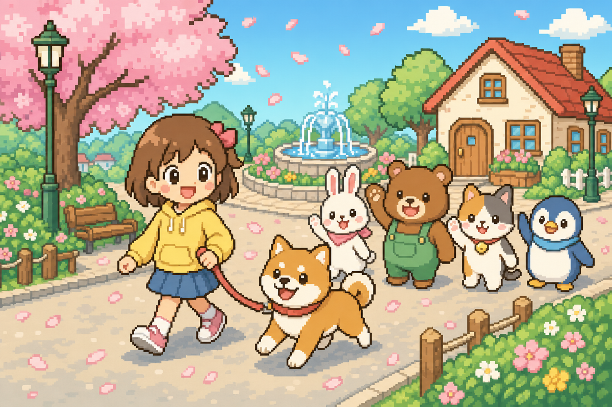

〜 犬といっしょに のんびりお散歩 〜
そして——一度始めたら、なぜか やめられない。
▶ 今すぐ遊ぶ無料 ・ インストール不要 ・ 登録不要
🐾 お約束：1日30秒でもいいので、わんこのお世話ができる人だけ遊んでね。
📱 スマホOK💻 パソコンOK💾 自動セーブ

〜 犬といっしょに のんびりお散歩 〜
そして——一度始めたら、なぜか やめられない。
▶ 今すぐ遊ぶ無料 ・ インストール不要 ・ 登録不要
🐾 お約束：1日30秒でもいいので、わんこのお世話ができる人だけ遊んでね。
📱 スマホOK💻 パソコンOK💾 自動セーブ

— この街には、セーブして止まる時間がありません —
でも、だいじょうぶ。
毎日たった30秒、会いに来てくれるだけで——
わんこも街も、ずっと幸せです。
※ ほのぼのゲームです。本当です。
リードでつながったしば犬と、大きな街をのんびりお散歩。なでなですると「わんっ♪」とよろこびます。ボールを買えば、投げて取ってくる遊びも。
街には8人の動物の住民が暮らしています。話しかけると、もにょもにょ声でおしゃべり。おつかいを届けると、なかよし度♥が上がります。
さんばしで釣りをしたり、チョウチョを追いかけたり。魚8種・虫6種の図鑑コンプリートを目指そう。夜にしか会えない虫もいます。
リンゴ・魚・虫・化石を売ってベルをためよう。花のタネ、犬のバンダナ、ボールが買えます。
草むらにキラキラ光る場所を見つけたら、掘ってみよう。ベルや化石、まれに「金のホネ」が出ることも…！
夕焼けが訪れ、夜には街灯と家の窓に明かりが灯ります。湖のほとりにはホタルがふわり。時間帯で表情が変わります。